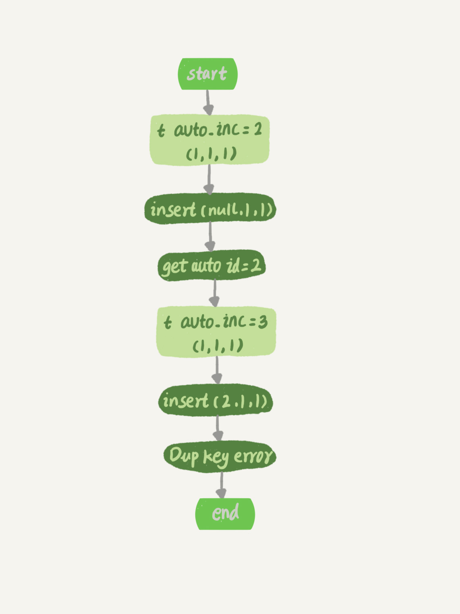
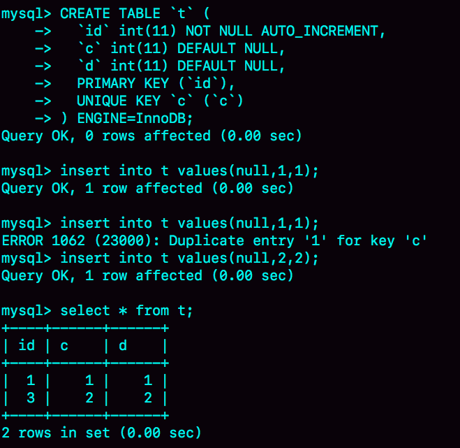
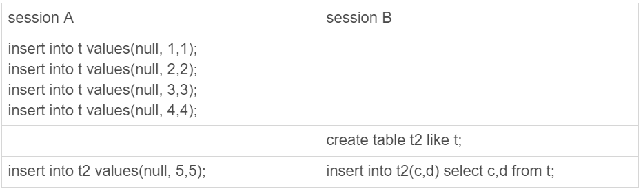

- 00 开篇词 这一次，让我们一起来搞懂MySQL.md.html
- 01 基础架构：一条SQL查询语句是如何执行的？.md.html
- 02 日志系统：一条SQL更新语句是如何执行的？.md.html
- 03 事务隔离：为什么你改了我还看不见？.md.html
- 04 深入浅出索引（上）.md.html
- 05 深入浅出索引（下）.md.html
- 06 全局锁和表锁 ：给表加个字段怎么有这么多阻碍？.md.html
- 07 行锁功过：怎么减少行锁对性能的影响？.md.html
- 08 事务到底是隔离的还是不隔离的？.md.html
- 09 普通索引和唯一索引，应该怎么选择？.md.html
- 10 MySQL为什么有时候会选错索引？.md.html
- 11 怎么给字符串字段加索引？.md.html
- 12 为什么我的MySQL会“抖”一下？.md.html
- 13 为什么表数据删掉一半，表文件大小不变？.md.html
- 14 count()这么慢，我该怎么办？.md.html
- 15 答疑文章（一）：日志和索引相关问题.md.html
- 16 “order by”是怎么工作的？.md.html
- 17 如何正确地显示随机消息？.md.html
- 18 为什么这些SQL语句逻辑相同，性能却差异巨大？.md.html
- 19 为什么我只查一行的语句，也执行这么慢？.md.html
- 20 幻读是什么，幻读有什么问题？.md.html
- 21 为什么我只改一行的语句，锁这么多？.md.html
- 22 MySQL有哪些“饮鸩止渴”提高性能的方法？.md.html
- 23 MySQL是怎么保证数据不丢的？.md.html
- 24 MySQL是怎么保证主备一致的？.md.html
- 25 MySQL是怎么保证高可用的？.md.html
- 26 备库为什么会延迟好几个小时？.md.html
- 27 主库出问题了，从库怎么办？.md.html
- 28 读写分离有哪些坑？.md.html
- 29 如何判断一个数据库是不是出问题了？.md.html
- 30 答疑文章（二）：用动态的观点看加锁.md.html
- 31 误删数据后除了跑路，还能怎么办？.md.html
- 32 为什么还有kill不掉的语句？.md.html
- 33 我查这么多数据，会不会把数据库内存打爆？.md.html
- 34 到底可不可以使用join？.md.html
- 35 join语句怎么优化？.md.html
- 36 为什么临时表可以重名？.md.html
- 37 什么时候会使用内部临时表？.md.html
- 38 都说InnoDB好，那还要不要使用Memory引擎？.md.html
- 39 自增主键为什么不是连续的？.md.html
- 40 insert语句的锁为什么这么多？.md.html
- 41 怎么最快地复制一张表？.md.html
- 42 grant之后要跟着flush privileges吗？.md.html
- 43 要不要使用分区表？.md.html
- 44 答疑文章（三）：说一说这些好问题.md.html
- 45 自增id用完怎么办？.md.html
- 我的MySQL心路历程.md.html
- 结束语 点线网面，一起构建MySQL知识网络.md.html
39 自增主键为什么不是连续的？
在[第 4 篇文章]中，我们提到过自增主键，由于自增主键可以让主键索引尽量地保持递增顺序插入，避免了页分裂，因此索引更紧凑。
之前我见过有的业务设计依赖于自增主键的连续性，也就是说，这个设计假设自增主键是连续的。但实际上，这样的假设是错的，因为自增主键不能保证连续递增。
今天这篇文章，我们就来说说这个问题，看看什么情况下自增主键会出现 “空洞”？
为了便于说明，我们创建一个表 t，其中 id 是自增主键字段、c 是唯一索引。
CREATE TABLE `t` (
`id` int(11) NOT NULL AUTO_INCREMENT,
`c` int(11) DEFAULT NULL,
`d` int(11) DEFAULT NULL,
PRIMARY KEY (`id`),
UNIQUE KEY `c` (`c`)
) ENGINE=InnoDB;
自增值保存在哪儿？
在这个空表 t 里面执行 insert into t values(null, 1, 1); 插入一行数据，再执行 show create table 命令，就可以看到如下图所示的结果：

图 1 自动生成的 AUTO_INCREMENT 值
可以看到，表定义里面出现了一个 AUTO_INCREMENT=2，表示下一次插入数据时，如果需要自动生成自增值，会生成 id=2。
其实，这个输出结果容易引起这样的误解：自增值是保存在表结构定义里的。实际上，表的结构定义存放在后缀名为.frm 的文件中，但是并不会保存自增值。
不同的引擎对于自增值的保存策略不同。
- MyISAM 引擎的自增值保存在数据文件中。
- InnoDB 引擎的自增值，其实是保存在了内存里，并且到了 MySQL 8.0 版本后，才有了“自增值持久化”的能力，也就是才实现了“如果发生重启，表的自增值可以恢复为 MySQL 重启前的值”，具体情况是：
- 在 MySQL 5.7 及之前的版本，自增值保存在内存里，并没有持久化。每次重启后，第一次打开表的时候，都会去找自增值的最大值 max(id)，然后将 max(id)+1 作为这个表当前的自增值。 举例来说，如果一个表当前数据行里最大的 id 是 10，AUTO_INCREMENT=11。这时候，我们删除 id=10 的行，AUTO_INCREMENT 还是 11。但如果马上重启实例，重启后这个表的 AUTO_INCREMENT 就会变成 10。 也就是说，MySQL 重启可能会修改一个表的 AUTO_INCREMENT 的值。
- 在 MySQL 8.0 版本，将自增值的变更记录在了 redo log 中，重启的时候依靠 redo log 恢复重启之前的值。
理解了 MySQL 对自增值的保存策略以后，我们再看看自增值修改机制。
自增值修改机制
在 MySQL 里面，如果字段 id 被定义为 AUTO_INCREMENT，在插入一行数据的时候，自增值的行为如下：
- 如果插入数据时 id 字段指定为 0、null 或未指定值，那么就把这个表当前的 AUTO_INCREMENT 值填到自增字段；
- 如果插入数据时 id 字段指定了具体的值，就直接使用语句里指定的值。
根据要插入的值和当前自增值的大小关系，自增值的变更结果也会有所不同。假设，某次要插入的值是 X，当前的自增值是 Y。
- 如果 X<Y，那么这个表的自增值不变；
- 如果 X≥Y，就需要把当前自增值修改为新的自增值。
新的自增值生成算法是：从 auto_increment_offset 开始，以 auto_increment_increment 为步长，持续叠加，直到找到第一个大于 X 的值，作为新的自增值。
其中，auto_increment_offset 和 auto_increment_increment 是两个系统参数，分别用来表示自增的初始值和步长，默认值都是 1。
备注：在一些场景下，使用的就不全是默认值。比如，双 M 的主备结构里要求双写的时候，我们就可能会设置成 auto_increment_increment=2，让一个库的自增 id 都是奇数，另一个库的自增 id 都是偶数，避免两个库生成的主键发生冲突。
当 auto_increment_offset 和 auto_increment_increment 都是 1 的时候，新的自增值生成逻辑很简单，就是：
- 如果准备插入的值 >= 当前自增值，新的自增值就是“准备插入的值 +1”；
- 否则，自增值不变。
这就引入了我们文章开头提到的问题，在这两个参数都设置为 1 的时候，自增主键 id 却不能保证是连续的，这是什么原因呢？
自增值的修改时机
要回答这个问题，我们就要看一下自增值的修改时机。
假设，表 t 里面已经有了 (1,1,1) 这条记录，这时我再执行一条插入数据命令：
insert into t values(null, 1, 1);
这个语句的执行流程就是：
- 执行器调用 InnoDB 引擎接口写入一行，传入的这一行的值是 (0,1,1);
- InnoDB 发现用户没有指定自增 id 的值，获取表 t 当前的自增值 2；
- 将传入的行的值改成 (2,1,1);
- 将表的自增值改成 3；
- 继续执行插入数据操作，由于已经存在 c=1 的记录，所以报 Duplicate key error，语句返回。
对应的执行流程图如下：

图 2 insert(null, 1,1) 唯一键冲突
可以看到，这个表的自增值改成 3，是在真正执行插入数据的操作之前。这个语句真正执行的时候，因为碰到唯一键 c 冲突，所以 id=2 这一行并没有插入成功，但也没有将自增值再改回去。
所以，在这之后，再插入新的数据行时，拿到的自增 id 就是 3。也就是说，出现了自增主键不连续的情况。
如图 3 所示就是完整的演示结果。

图 3 一个自增主键 id 不连续的复现步骤
可以看到，这个操作序列复现了一个自增主键 id 不连续的现场 (没有 id=2 的行）。可见，唯一键冲突是导致自增主键 id 不连续的第一种原因。
同样地，事务回滚也会产生类似的现象，这就是第二种原因。
下面这个语句序列就可以构造不连续的自增 id，你可以自己验证一下。
insert into t values(null,1,1);
begin;
insert into t values(null,2,2);
rollback;
insert into t values(null,2,2);
// 插入的行是 (3,2,2)
你可能会问，为什么在出现唯一键冲突或者回滚的时候，MySQL 没有把表 t 的自增值改回去呢？如果把表 t 的当前自增值从 3 改回 2，再插入新数据的时候，不就可以生成 id=2 的一行数据了吗？
其实，MySQL 这么设计是为了提升性能。接下来，我就跟你分析一下这个设计思路，看看自增值为什么不能回退。
假设有两个并行执行的事务，在申请自增值的时候，为了避免两个事务申请到相同的自增 id，肯定要加锁，然后顺序申请。
- 假设事务 A 申请到了 id=2， 事务 B 申请到 id=3，那么这时候表 t 的自增值是 4，之后继续执行。
- 事务 B 正确提交了，但事务 A 出现了唯一键冲突。
- 如果允许事务 A 把自增 id 回退，也就是把表 t 的当前自增值改回 2，那么就会出现这样的情况：表里面已经有 id=3 的行，而当前的自增 id 值是 2。
- 接下来，继续执行的其他事务就会申请到 id=2，然后再申请到 id=3。这时，就会出现插入语句报错“主键冲突”。
而为了解决这个主键冲突，有两种方法：
- 每次申请 id 之前，先判断表里面是否已经存在这个 id。如果存在，就跳过这个 id。但是，这个方法的成本很高。因为，本来申请 id 是一个很快的操作，现在还要再去主键索引树上判断 id 是否存在。
- 把自增 id 的锁范围扩大，必须等到一个事务执行完成并提交，下一个事务才能再申请自增 id。这个方法的问题，就是锁的粒度太大，系统并发能力大大下降。
可见，这两个方法都会导致性能问题。造成这些麻烦的罪魁祸首，就是我们假设的这个“允许自增 id 回退”的前提导致的。
因此，InnoDB 放弃了这个设计，语句执行失败也不回退自增 id。也正是因为这样，所以才只保证了自增 id 是递增的，但不保证是连续的。
自增锁的优化
可以看到，自增 id 锁并不是一个事务锁，而是每次申请完就马上释放，以便允许别的事务再申请。其实，在 MySQL 5.1 版本之前，并不是这样的。
接下来，我会先给你介绍下自增锁设计的历史，这样有助于你分析接下来的一个问题。
在 MySQL 5.0 版本的时候，自增锁的范围是语句级别。也就是说，如果一个语句申请了一个表自增锁，这个锁会等语句执行结束以后才释放。显然，这样设计会影响并发度。
MySQL 5.1.22 版本引入了一个新策略，新增参数 innodb_autoinc_lock_mode，默认值是 1。
- 这个参数的值被设置为 0 时，表示采用之前 MySQL 5.0 版本的策略，即语句执行结束后才释放锁；
- 这个参数的值被设置为 1 时：
- 普通 insert 语句，自增锁在申请之后就马上释放；
- 类似 insert … select 这样的批量插入数据的语句，自增锁还是要等语句结束后才被释放；
- 这个参数的值被设置为 2 时，所有的申请自增主键的动作都是申请后就释放锁。
你一定有两个疑问：为什么默认设置下，insert … select 要使用语句级的锁？为什么这个参数的默认值不是 2？
答案是，这么设计还是为了数据的一致性。
我们一起来看一下这个场景：

图 4 批量插入数据的自增锁
在这个例子里，我往表 t1 中插入了 4 行数据，然后创建了一个相同结构的表 t2，然后两个 session 同时执行向表 t2 中插入数据的操作。
你可以设想一下，如果 session B 是申请了自增值以后马上就释放自增锁，那么就可能出现这样的情况：
- session B 先插入了两个记录，(1,1,1)、(2,2,2)；
- 然后，session A 来申请自增 id 得到 id=3，插入了（3,5,5)；
- 之后，session B 继续执行，插入两条记录 (4,3,3)、 (5,4,4)。
你可能会说，这也没关系吧，毕竟 session B 的语义本身就没有要求表 t2 的所有行的数据都跟 session A 相同。
是的，从数据逻辑上看是对的。但是，如果我们现在的 binlog_format=statement，你可以设想下，binlog 会怎么记录呢？
由于两个 session 是同时执行插入数据命令的，所以 binlog 里面对表 t2 的更新日志只有两种情况：要么先记 session A 的，要么先记 session B 的。
但不论是哪一种，这个 binlog 拿去从库执行，或者用来恢复临时实例，备库和临时实例里面，session B 这个语句执行出来，生成的结果里面，id 都是连续的。这时，这个库就发生了数据不一致。
你可以分析一下，出现这个问题的原因是什么？
其实，这是因为原库 session B 的 insert 语句，生成的 id 不连续。这个不连续的 id，用 statement 格式的 binlog 来串行执行，是执行不出来的。
而要解决这个问题，有两种思路：
- 一种思路是，让原库的批量插入数据语句，固定生成连续的 id 值。所以，自增锁直到语句执行结束才释放，就是为了达到这个目的。
- 另一种思路是，在 binlog 里面把插入数据的操作都如实记录进来，到备库执行的时候，不再依赖于自增主键去生成。这种情况，其实就是 innodb_autoinc_lock_mode 设置为 2，同时 binlog_format 设置为 row。
因此，在生产上，尤其是有 insert … select 这种批量插入数据的场景时，从并发插入数据性能的角度考虑，我建议你这样设置：innodb_autoinc_lock_mode=2 ，并且 binlog_format=row. 这样做，既能提升并发性，又不会出现数据一致性问题。
需要注意的是，我这里说的批量插入数据，包含的语句类型是 insert … select、replace … select 和 load data 语句。
但是，在普通的 insert 语句里面包含多个 value 值的情况下，即使 innodb_autoinc_lock_mode 设置为 1，也不会等语句执行完成才释放锁。因为这类语句在申请自增 id 的时候，是可以精确计算出需要多少个 id 的，然后一次性申请，申请完成后锁就可以释放了。
也就是说，批量插入数据的语句，之所以需要这么设置，是因为“不知道要预先申请多少个 id”。
既然预先不知道要申请多少个自增 id，那么一种直接的想法就是需要一个时申请一个。但如果一个 select … insert 语句要插入 10 万行数据，按照这个逻辑的话就要申请 10 万次。显然，这种申请自增 id 的策略，在大批量插入数据的情况下，不但速度慢，还会影响并发插入的性能。
因此，对于批量插入数据的语句，MySQL 有一个批量申请自增 id 的策略：
- 语句执行过程中，第一次申请自增 id，会分配 1 个；
- 1 个用完以后，这个语句第二次申请自增 id，会分配 2 个；
- 2 个用完以后，还是这个语句，第三次申请自增 id，会分配 4 个；
- 依此类推，同一个语句去申请自增 id，每次申请到的自增 id 个数都是上一次的两倍。
举个例子，我们一起看看下面的这个语句序列：
insert into t values(null, 1,1);
insert into t values(null, 2,2);
insert into t values(null, 3,3);
insert into t values(null, 4,4);
create table t2 like t;
insert into t2(c,d) select c,d from t;
insert into t2 values(null, 5,5);
insert…select，实际上往表 t2 中插入了 4 行数据。但是，这四行数据是分三次申请的自增 id，第一次申请到了 id=1，第二次被分配了 id=2 和 id=3， 第三次被分配到 id=4 到 id=7。
由于这条语句实际只用上了 4 个 id，所以 id=5 到 id=7 就被浪费掉了。之后，再执行 insert into t2 values(null, 5,5)，实际上插入的数据就是（8,5,5)。
这是主键 id 出现自增 id 不连续的第三种原因。
小结
今天，我们从“自增主键为什么会出现不连续的值”这个问题开始，首先讨论了自增值的存储。
在 MyISAM 引擎里面，自增值是被写在数据文件上的。而在 InnoDB 中，自增值是被记录在内存的。MySQL 直到 8.0 版本，才给 InnoDB 表的自增值加上了持久化的能力，确保重启前后一个表的自增值不变。
然后，我和你分享了在一个语句执行过程中，自增值改变的时机，分析了为什么 MySQL 在事务回滚的时候不能回收自增 id。
MySQL 5.1.22 版本开始引入的参数 innodb_autoinc_lock_mode，控制了自增值申请时的锁范围。从并发性能的角度考虑，我建议你将其设置为 2，同时将 binlog_format 设置为 row。我在前面的文章中其实多次提到，binlog_format 设置为 row，是很有必要的。今天的例子给这个结论多了一个理由。
最后，我给你留一个思考题吧。
在最后一个例子中，执行 insert into t2(c,d) select c,d from t; 这个语句的时候，如果隔离级别是可重复读（repeatable read），binlog_format=statement。这个语句会对表 t 的所有记录和间隙加锁。
你觉得为什么需要这么做呢？
你可以把你的思考和分析写在评论区，我会在下一篇文章和你讨论这个问题。感谢你的收听，也欢迎你把这篇文章分享给更多的朋友一起阅读。
上期问题时间
上期的问题是，如果你维护的 MySQL 系统里有内存表，怎么避免内存表突然丢数据，然后导致主备同步停止的情况。
我们假设的是主库暂时不能修改引擎，那么就把备库的内存表引擎先都改成 InnoDB。对于每个内存表，执行
set sql_log_bin=off;
alter table tbl_name engine=innodb;
这样就能避免备库重启的时候，数据丢失的问题。
由于主库重启后，会往 binlog 里面写“delete from tbl_name”，这个命令传到备库，备库的同名的表数据也会被清空。
因此，就不会出现主备同步停止的问题。
如果由于主库异常重启，触发了 HA，这时候我们之前修改过引擎的备库变成了主库。而原来的主库变成了新备库，在新备库上把所有的内存表（这时候表里没数据）都改成 InnoDB 表。
所以，如果我们不能直接修改主库上的表引擎，可以配置一个自动巡检的工具，在备库上发现内存表就把引擎改了。
同时，跟业务开发同学约定好建表规则，避免创建新的内存表。